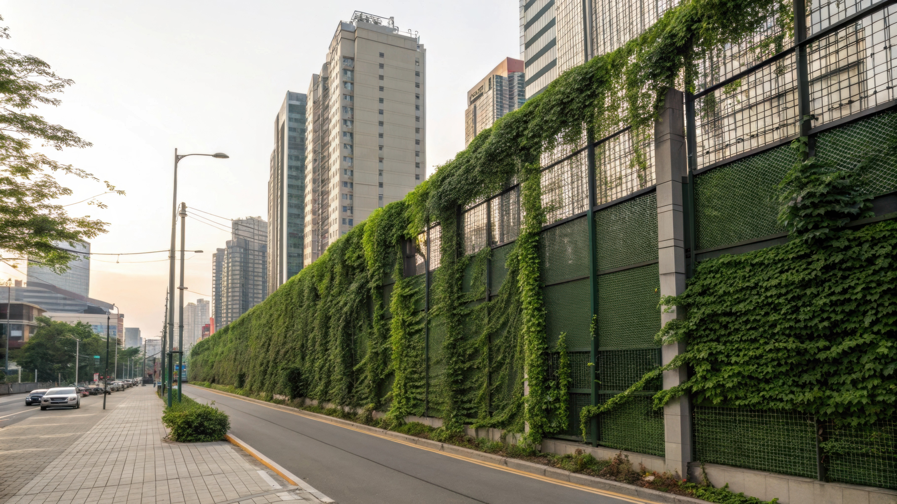

成果花絮文章
淨化區建置進度、活動紀錄與環境改善亮點，透過影像與文字分享南投縣推動永續的努力。透過照片、影音與文字故事.
持續推動清淨空氣綠牆 守護學童與長者健康
為改善校園學童學習空間之空氣品質，環保署本(108)年已補助13縣市32所公立國中小學，在教室走廊女兒牆外側花台設置「清淨空氣綠牆」，成效良好。明(109)年將持續推動，同時擴大辦理公立長照機構設置綠牆，藉由自然植生綠牆，阻擋室外空污並提升室內空品，保護學童與長者健康。 改善室內空氣品質的方法有許多，植生綠牆具自我循環淨化空氣之功能，是不用插電的空氣清淨幫手，為最自然環保之空氣清淨機。環保署指出，依國際研究清淨空氣綠牆改善空氣品質成果顯示，垂直綠牆可降低二氧化氮(NO2)及懸浮微粒(PM10)濃度約40%及60%，另該署委託之研究團隊測試結果亦與國際研究相當，此外，綠牆亦可降低教室內細懸浮微粒(PM2.5) 濃度約10%、臭氧(O3) 約30%，同時可降低室內溫度約1.8oC。 環保署表示，利用各種植物淨化空氣的特性，將不同植物種植於適當位置，可得到淨化空氣、美化環境與增加視覺景觀的效果。環保署呼籲，綠化是一項無悔的政策，一般民眾可自行於住家外牆設置簡易綠牆，依不同空氣污染物的種類選擇適當的植物，運用植物不同的色彩，組合出屬於自己居家環境的綠牆，並做好澆水施肥等養護工作，讓我們共同為環境盡一分心力。
109-01-02 [行政院環境保護署空保處]